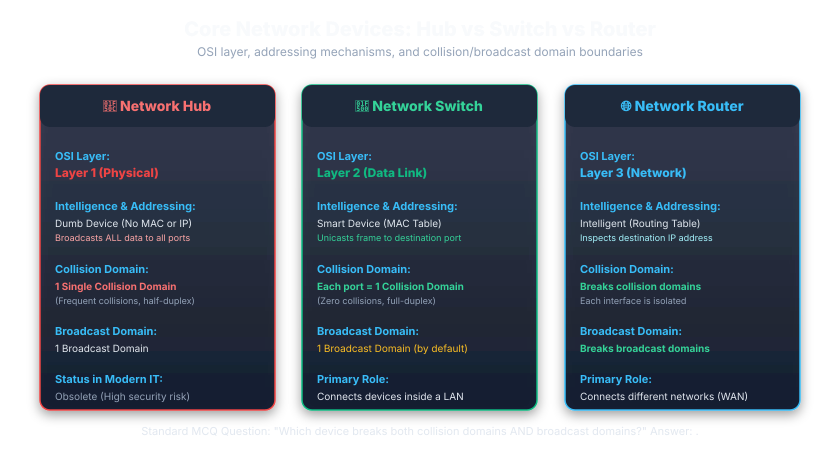
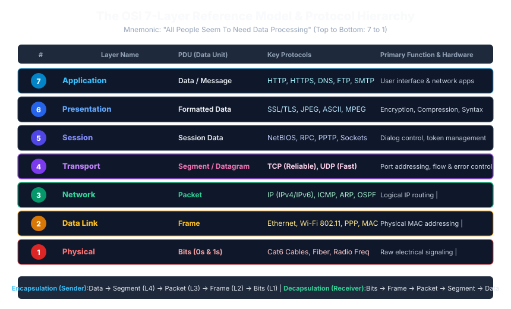
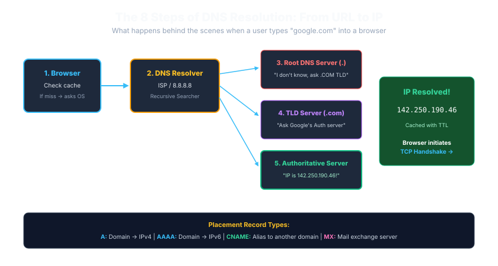
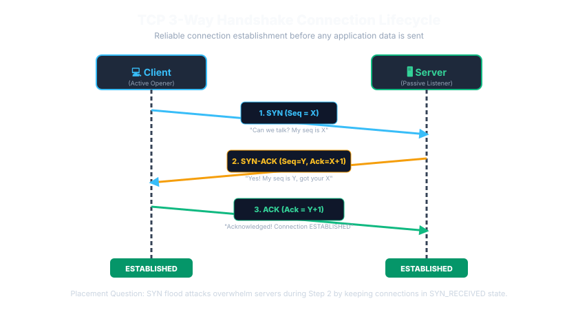
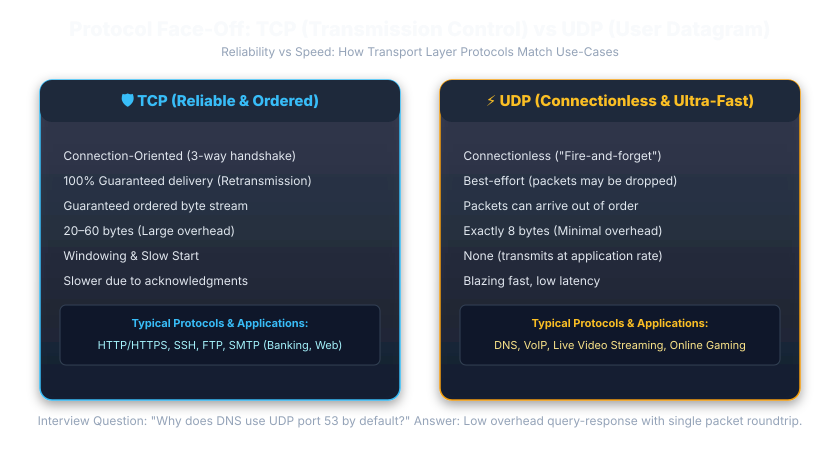
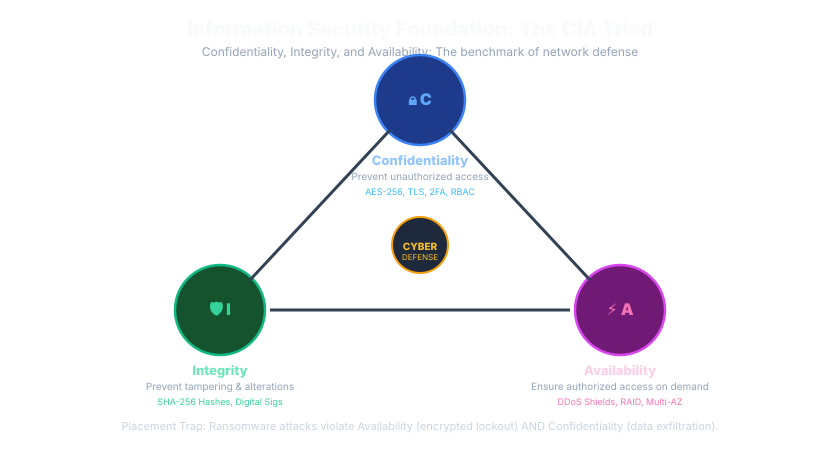

Complete Networking & Security Learning Roadmap
Mastering computer networking and cybersecurity for MNC technical assessments requires understanding how raw electrical or optical bits transform into application data, how packets traverse global routers, and how defensive perimeters safeguard enterprise infrastructure against adversarial compromise.
💡 Click any topic on the left sidebar to jump straight to that technical section, inspect architectural diagrams, review real-world interview responses, and validate your placement exam readiness with interactive questions.
What is Computer Networking?
A computer network is an interconnection of two or more autonomous computing devices (nodes) using physical (wired) or wireless transmission media governed by standardized communication protocols to share digital resources, exchange data, and enable distributed computing.
Why is Computer Networking Critical?
- Resource Sharing: Centralized databases, storage arrays (SAN/NAS), high-performance computing clusters, and printers shared across thousands of enterprise users.
- High Availability & Redundancy: Distributed systems can fail over to secondary nodes across geographic boundaries without service disruption.
- Cost Optimization: Rather than installing duplicate infrastructure at every branch, organizations leverage consolidated cloud architectures.
Network Types: PAN, LAN, MAN, WAN
Computer networks are classified according to their physical and geographic expanse, ownership, transmission speeds, and error rates.
| Network Type | Geographic Scope | Speed & Latency | Ownership & Media | Practical Example |
|---|---|---|---|---|
| PAN (Personal Area Network) | Within 10 meters (single person) | Moderate (1 - 24 Mbps), low latency | Individual owner; Bluetooth, Zigbee, USB | Smartwatch syncing with smartphone; wireless earbuds |
| LAN (Local Area Network) | Room, floor, single building, campus (up to 1-2 km) | Very High (1 Gbps - 100 Gbps), minimal latency (<1ms) | Private enterprise/school; Ethernet (Cat6), Wi-Fi (802.11ax) | University computer lab; corporate office network |
| MAN (Metropolitan Area Network) | Entire city or municipal district (5 - 50 km) | High (Up to 10 Gbps), moderate latency | Telecom consortium, municipal utility; Optical Fiber, WiMAX | City-wide cable television network; interconnected civic branches |
| WAN (Wide Area Network) | Country, continent, or global planet-scale | Variable (10 Mbps - 100+ Gbps), higher latency (20-200ms) | Public ISPs, telecom carriers; Subsea cables, satellite links | The Global Public Internet; multinational bank inter-country network |
Internet vs Intranet vs Extranet
A common technical interview screening question asks candidates to distinguish enterprise network accessibility models.
Open to all global users and potential attackers without physical security or access controls.
Controlled access granted to verified partners, vendors, and B2B clients via IPsec tunnels, API gateways, and client certificates.
Strictly isolated internal LAN for corporate employees. Hosts confidential systems: payroll, HR databases, ERP, and proprietary code repositories.
Enterprise network architectures divide infrastructure into concentric trust perimeters. The Public Internet has no trust guarantees; Extranets allow authenticated external partners through encrypted VPN tunnels; the Intranet is completely shielded for internal employee access.
Direct incoming connections from the Internet to the Intranet are strictly forbidden by security baselines. Inbound traffic must terminate in a DMZ, and outbound traffic must pass through NAT and egress stateful filtering proxies.
International Airport: The public check-in hall is the Public Internet; the VIP airline lounge accessible only with verified boarding passes is the Extranet; the security-screened Air Traffic Control tower is the Private Intranet.
🌐 Internet
Global, public system of interconnected computer networks using TCP/IP. No single governing entity controls it. Completely open access.
🔒 Intranet
Private network accessible only to an organization’s internal staff. Protected by corporate firewalls, isolating payroll, source code, and employee records from outside access.
🤝 Extranet
A controlled extension of an intranet providing secure, restricted access to verified external stakeholders (suppliers, contractors, banking partners) typically over VPN or TLS mutual authentication.
Network Topologies: Bus, Star, Ring, Mesh, Tree & Hybrid
A network topology defines the geometric arrangement of nodes and physical or logical links connecting them.
• Cons: Single point of failure (break halts all nodes), high packet collisions.
• Cons: Central switch is SPOF. Modern enterprise LAN standard!
• Cons: Single node failure breaks token circulation (remedied by Dual-Ring FDDI).
• Cons: Quadratic cable growth; used in cloud data center core backbones.
Network topologies define the geometric arrangement of links connecting devices. Modern enterprise LANs universally adopt Star topology for local switching, whereas WAN cores and cloud availability zones deploy Full or Partial Mesh architectures for fault-tolerant high availability.
Full Mesh cable calculation formula: Number of duplex links = [n(n-1)] / 2. For n=6 routers, links = (6 * 5) / 2 = 15 dedicated cables. Number of ports required per device = n - 1.
Airline Routes: Star is hub-and-spoke (all flights connect through Chicago or Atlanta); Mesh is direct flights connecting every city pair directly to each other without layovers.
| Topology | Central Device? | Failure Behavior | Cable Cost | Placement Scenario |
|---|---|---|---|---|
| Star | YES (Switch/Hub) | Single node cable cut affects only that node. Central switch failure halts entire LAN. | Moderate (n cables) | Most common modern enterprise Ethernet LAN topology. |
| Full Mesh | NO | Extremely robust! Multiple alternate redundant paths exist if any line fails. | Extremely High: n(n - 1) / 2 links |
WAN backbones, nuclear power control, military routing. |
| Ring | NO | In simple ring, a single node failure breaks the entire loop (mitigated by Dual Ring FDDI). | Low (n links) | Token Ring, legacy fiber metropolitan loops (SONET/SDH). |
| Bus | NO (Shared Wire) | Backbone cable break halts entire network due to reflection without terminator. | Lowest | Legacy 10BASE2/10BASE5 coaxial cable networks. |
| Tree / Hybrid | Hierarchical | Root switch failure isolates child sub-branches. | Scalable | Large university campus with core, distribution, and access switches. |
"How many physical duplex links and ports are required to establish a fully meshed network of 10 routers?"
Formula:
Links = n * (n - 1) / 2 = 10 * 9 / 2 = 45 links.Ports per device: Each router needs
n - 1 = 9 ports (Total ports across all routers = 90).
🔌 Network Devices: Hub vs Switch vs Router
Analyzing OSI Layer 1, 2, and 3 networking equipment, collision domains, and broadcast isolation.

The #1 hardware interview question:
- Hub (Layer 1): 1 Collision Domain, 1 Broadcast Domain. Repeats bits to all ports; massive packet collisions and security sniffing vulnerabilities.
- Switch (Layer 2): N Collision Domains (each port is its own collision domain), but 1 Broadcast Domain. Forwards frames using MAC address tables.
- Router (Layer 3): Separates BOTH collision domains AND broadcast domains. Forwards packets between independent IP subnets.
If a 24-port switch has 20 PCs connected, how many collision domains and how many broadcast domains exist on that switch?
Answer: 20 Collision Domains (each active port forms its own collision domain) and exactly 1 Broadcast Domain (all ports receive broadcast frames unless partitioned into VLANs).
Network Devices Overview & Packet Flow
Network infrastructure relies on specialized hardware operating at distinct layers of the OSI model to amplify, filter, switch, and route digital transmissions.
Untagged Ethernet Frame
802.1Q Tagged VLAN Frame
PAT / NAT Overload
Destination Cloud Server
When an endpoint sends traffic, the Layer 2 switch looks up its MAC Address Table (CAM) to switch the frame across local VLAN trunks without altering IP headers. At the gateway, the Layer 3 router strips the Ethernet frame, determines the path using its IP routing table, translates private IPs via NAT, and forwards packets over the WAN.
Switches operate at Layer 2 and forward based on MAC addresses within the same subnet. Routers operate at Layer 3, forward based on IP addresses across different networks, and rewrite Layer 2 headers at every routing hop.
Corporate Mailroom: The office floor messenger (Switch) moves inter-office memos directly between desks; outgoing external mail is handed to the Postal Logistics office (Router) which assigns international postage and routes it across cities.
Hub: The Dumb Repeater
A Hub is a legacy Layer 1 (Physical Layer) device. It has no intelligence, cannot inspect MAC addresses, and operates strictly as an electrical multi-port signal repeater.
Core Operational Characteristics:
- Blind Broadcasts: Any incoming frame on Port 1 is regenerated and flooded out to every other port simultaneously.
- Single Collision Domain: All connected devices share the exact same physical bandwidth. If PC1 and PC2 transmit at the same instant, signals collide and corrupt, triggering CSMA/CD backoff.
- Single Broadcast Domain: Broadcasts flood everywhere.
- Half-Duplex Only: Devices cannot transmit and receive simultaneously.
Switch: Intelligent Layer 2 Forwarding
A Switch operates primarily at Layer 2 (Data Link Layer). Unlike a hub, a switch inspects the Destination MAC address inside incoming Ethernet frames and unicasts data directly to the specific target port.
Router: Inter-Network Gateway & Path Selection
A Router is a Layer 3 (Network Layer) device that connects two or more logically distinct IP networks (e.g., your home LAN 192.168.1.0/24 to the public Internet ISP network).
Core Responsibilities of a Router:
- Breaks Broadcast Domains: Routers do NOT forward Layer 2 Ethernet broadcasts (such as ARP requests) across their interfaces. Every router interface is its own separate broadcast domain.
- Routing Table Lookups: Inspects destination IP addresses, calculates best path via routing protocols (OSPF, BGP, RIP, static routes), and forwards packets to the next-hop IP.
- Packet Header Rewriting: Decrements the IP Time-To-Live (TTL) field by 1 and re-encapsulates the packet into a new Layer 2 frame with the next hop's destination MAC address.
Repeater: Signal Amplification & Regeneration
Due to physical resistance and attenuation, electrical pulses over copper cables degrade after standard limits (e.g., 100 meters for Cat6 Ethernet). A Repeater operates at Layer 1 to regenerate degraded bit signals before retransmitting them, extending network distance without altering packet content.
Bridge: Hub vs Bridge vs Switch
A Bridge is a 2-port Layer 2 device that connects two LAN segments, filtering traffic based on MAC addresses. A modern Switch is essentially a high-density, hardware-accelerated (ASIC-powered) multiport bridge.
| Feature | Hub | Bridge | Switch |
|---|---|---|---|
| OSI Layer | Layer 1 (Physical) | Layer 2 (Data Link) | Layer 2 (Data Link / L3 Multilayer) |
| Port Density | 4 - 24 ports | Typically 2 - 4 ports | 24 - 48+ ports (modular chassis) |
| Forwarding Logic | Electrical Broadcast (Dumb) | Software-based MAC filter | Hardware ASIC wire-speed switching |
| Collision Domains | 1 single shared domain | 1 domain per port (2 total) | 1 domain per port (e.g. 48 domains) |
Gateway: Protocol Translators & Default Gateways
The term Gateway is used in two major contexts in computer networking:
- Protocol Gateway: A system that connects two fundamentally incompatible network architectures or protocols (e.g., an IP-to-SNA gateway, or a VoIP Gateway translating SIP packets to PSTN analog telecommunications). Can operate up through Layer 7.
- Default Gateway (IP Networking): The local router IP address configured on a host (e.g.,
192.168.1.1) to which all traffic destined outside the local subnet must be sent.
Wireless Access Point (WAP)
A Wireless Access Point (AP) bridges wireless radio frequencies (IEEE 802.11 Wi-Fi) with wired Ethernet infrastructures (IEEE 802.3). It transmits an SSID beacon, manages client wireless authentication (WPA2/WPA3), and bridges radio frames directly into switch ports.
MAC Address Architecture: 48-Bit Physical Addressing
A MAC (Media Access Control) address, also known as a physical, hardware, or burned-in address (BIA), is a globally unique 48-bit (6-byte) identifier permanently assigned to a Network Interface Card (NIC) by its manufacturer.
Assigned globally by IEEE to manufacturer (e.g. Cisco, Apple, Intel). Contains Unicast/Multicast & Universal/Local bits.
Unique sequential serial number assigned by hardware manufacturer to individual physical network controller chip.
A Media Access Control (MAC) address is permanently burned into a Network Interface Card (NIC) ROM. The first 24 bits identify the vendor entity registered with the IEEE, while the final 24 bits identify the individual device uniquely worldwide.
MAC addresses are physical Layer 2 addresses that cannot be routed across the Internet. Routers strip incoming MAC addresses and rewrite them with the next-hop router's MAC at every hop!
Vehicle Identification Number (VIN): The first 3 characters identify the car manufacturer and country of origin (OUI), and the remaining digits represent that car's unique factory serial number (NIC extension).
💡 Common notations: Colons (00:1A:2B:3C:4D:5E in Linux), Hyphens (00-1A-2B-3C-4D-5E in Windows cmd), or Dots (001a.2b3c.4d5e in Cisco IOS).
MAC Address vs IP Address Comparison
Understanding why both identifiers are required is one of the most frequent technical interview checks across all major service companies.
| Parameter | MAC Address (Physical) | IP Address (Logical) |
|---|---|---|
| OSI Layer | Layer 2 (Data Link Layer) | Layer 3 (Network Layer) |
| Length & Notation | 48 bits (6 bytes); Hexadecimal | 32 bits (IPv4 dotted decimal) / 128 bits (IPv6 hex) |
| Immutability | Burned into NIC; permanent (though spoofable via software) | Dynamic or static; changes whenever device moves to new network |
| Delivery Scope | Hop-by-hop local delivery inside the same LAN subnet | End-to-end global delivery across routers & Internet |
| Analogy | Government ID / Fingerprint (who you are) | Postal Delivery Address (where you currently reside) |
"When sending an HTTP packet from your laptop in India to Google's web server in California, does the destination MAC address on your outgoing frame point to Google's server?"
Answer: NO! The destination MAC address points to your local default gateway router! Destination IP remains Google's IP, but the Layer 2 destination MAC is rewritten at every intermediate router hop along the journey.
🌐 OSI 7-Layer Reference Model & PDU Hierarchy
Comprehensive protocol stack analysis from Physical electrical signals to Application interfaces.

Recruiters check if you know the exact PDU name at each OSI layer:
- Layer 7-5: PDU is Data (HTTP, DNS, SSL).
- Layer 4 (Transport): PDU is Segment (TCP) or Datagram (UDP). Contains source/dest port numbers.
- Layer 3 (Network): PDU is Packet. Contains source/dest IP addresses.
- Layer 2 (Data Link): PDU is Frame. Contains source/dest MAC addresses.
- Layer 1 (Physical): PDU is Bits (0s and 1s).
At which OSI layer does an IP Router operate, and what is the exact technical name of the data unit it inspects and forwards?
Answer: Layer 3 (Network Layer). The Protocol Data Unit (PDU) at Layer 3 is a Packet.
The 7-Layer OSI Reference Model Deep Dive
Layer 7: Application Layer
PDU: DataPurpose: Directly interfaces with human users and software applications requiring network connectivity. Does NOT mean the browser itself, but the protocols the browser speaks.
Real-World Analogy: The human customer drafting the letter text.
Placement Trap: Candidates mistakenly say "Chrome or Firefox is an application layer protocol". Browsers are software clients; HTTP/HTTPS are the Application Layer protocols!
Layer 6: Presentation Layer
PDU: DataPurpose: Syntax and semantics translator! Handles Data Representation, Encryption/Decryption, and Compression/Decompression.
Real-World Analogy: The translator converting English into Spanish and sealing the text into a secret coded cipher.
Placement Trap: Question: "At which OSI layer does data encryption typically occur conceptually?" -> Answer: Presentation Layer (Layer 6)!
Layer 5: Session Layer
PDU: DataPurpose: Establishes, manages, synchronizes, and terminates dialogues (sessions) between communicating applications. Inserts checkpoints for crash recovery.
Real-World Analogy: The phone operator saying "Hello, can you hear me? Okay, let us begin speaking." and saying "Goodbye" at the end.
Placement Trap: Do not confuse TCP session establishment (Layer 4) with application session tokens or RPC dialogues (Layer 5).
Layer 4: Transport Layer
PDU: Segment (TCP) / Datagram (UDP)Purpose: End-to-end process-to-process delivery! Handles segmentation of large data streams, port numbering, flow control (windowing), error detection, sequencing, and acknowledgments.
Real-World Analogy: The courier packaging parcels into smaller numbered boxes and tracking delivery receipts.
Placement Trap: Routers work at Layer 3; Layer 4 is executed strictly on the end hosts (client & server) operating systems.
Layer 3: Network Layer
PDU: PacketPurpose: Host-to-host global delivery across multiple distinct networks! Handles logical addressing (IP addresses) and optimal route path selection (routing).
Real-World Analogy: The regional postal distribution sorting center reading city, pin code, and country.
Placement Trap: Question: "Does the IP packet change its source/destination IP address as it hops across intermediate routers?" -> Answer: NO (unless NAT is applied).
Layer 2: Data Link Layer
PDU: FramePurpose: Node-to-node hop delivery on the same physical link/subnet! Handles physical MAC addressing, media access arbitration, and Cyclic Redundancy Check (CRC/FCS) frame error detection.
Real-World Analogy: The delivery courier driving from one specific street intersection to the next house door.
Placement Trap: Frames have both a Header AND a Trailer (FCS/CRC checksum). Layer 2 is the ONLY layer with a standard trailer!
Layer 1: Physical Layer
PDU: BitsPurpose: Transmits raw unstructured bitstreams (1s and 0s) over physical transmission media via electrical voltages, light pulses, or radio waves.
Real-World Analogy: The physical tarmac road and railway tracks over which delivery trucks move.
Placement Trap: A Hub operates at Layer 1; it cannot read MAC addresses or IP packets.
OSI Layer Memory Mnemonics
Top to Bottom (Layer 7 down to Layer 1):
Application ➔ Presentation ➔ Session ➔ Transport ➔ Network ➔ Data Link ➔ Physical
Bottom to Top (Layer 1 up to Layer 7):
Physical ➔ Data Link ➔ Network ➔ Transport ➔ Session ➔ Presentation ➔ Application
15 Classic OSI Layer Exam Scenarios
In technical assessments, questions test layer functionality rather than rote numbering. Review these 15 scenarios:
Uses TCP sequence & acknowledgment numbers.
Routers evaluate routing metrics and forwarding tables.
Translates between internal and network formats.
Switches read 48-bit physical addresses inside frame headers.
Encodes digital bits into physical signaling media.
Allows file transfers to resume from last checkpoint.
Identifies target running application endpoint (e.g. port 80).
Protocols like LDAP, HTTP Basic Auth, and Kerberos.
Detects frame corruptions via trailer checksum.
Segments large payloads into Maximum Segment Size (MSS).
Splits packets exceeding downstream Maximum Transmission Unit (MTU).
Prevents fast sender from overwhelming slow receiver buffer.
Pure signal level; does not inspect any header.
Re-encodes binary syntax for different platform architectures.
ICMP error diagnostic packets are encapsulated directly into IP.
Protocol Data Units (PDUs) & Encapsulation
As data moves down the protocol stack during transmission (Encapsulation), each layer prepends its own header. The data unit at each layer is called a Protocol Data Unit (PDU).
The TCP/IP Model & OSI vs TCP/IP Comparison
While the OSI model is a 7-layer theoretical reference, the TCP/IP model (DoD Model) is the real-world, 4-layer architecture upon which the modern Internet is built.
| OSI Theoretical Model (7 Layers) | TCP/IP Practical Stack (4 Layers) |
|---|---|
|
Layer 7: Application Layer 6: Presentation Layer 5: Session |
Layer 4: Application Layer Protocols: HTTP, HTTPS, DNS, SSH, SMTP, FTP, WebSocket |
| Layer 4: Transport Layer |
Layer 3: Transport Layer Protocols: TCP (Reliable stream), UDP (Datagrams) |
| Layer 3: Network Layer |
Layer 2: Internet Layer Protocols: IPv4, IPv6, ICMP (Ping), ARP, IPsec |
|
Layer 2: Data Link Layer Layer 1: Physical Layer |
Layer 1: Network Access / Link Layer Standards: Ethernet (802.3), Wi-Fi (802.11), Fiber optics, DOCSIS |
The OSI model is a 7-layer theoretical reference framework created by ISO. The actual Internet operates on DARPA's 4-layer TCP/IP suite, which consolidated OSI layers 5, 6, and 7 into the Application layer, and layers 1 and 2 into Network Access.
OSI is an educational reference model; TCP/IP is the practical implementation governing real hardware. Transport and Network layers align 1-to-1 between both models, but TCP/IP lets applications handle sessions and presentation encoding internally.
Architectural plan vs building execution: The 7-step blueprint details every sub-phase, but real construction teams combine framing, wiring, and insulation into consolidated milestone phases to ship faster.
| Parameter | OSI Reference Model | TCP/IP Protocol Suite |
|---|---|---|
| Number of Layers | 7 Layers | 4 Layers (or 5 in some modern textbooks) |
| Nature | Theoretical, generic, protocol-independent | Practical, protocol-dependent, implementation-driven |
| Development History | Defined by ISO after protocols were conceived | Developed by DARPA for ARPANET before OSI was finalized |
| Transport Guarantees | Supports both connection-oriented and connectionless | Connectionless at Internet layer (IP); TCP or UDP at Transport |
IP Addressing: IPv4, Private Ranges, Public IPs & IPv6
An Internet Protocol (IP) address is a logical numerical label assigned to every device participating in a computer network that uses the Internet Protocol for communication.
Private IPv4 Address Ranges (RFC 1918) — Non-Routable on Internet
Private IP addresses are reserved strictly for internal enterprise LANs and home networks. Public Internet routers drop packets destined for these IPs immediately.
| Class | CIDR Prefix | IP Range | Total Available IPs | Typical Usage |
|---|---|---|---|---|
| Class A | 10.0.0.0/8 |
10.0.0.0 - 10.255.255.255 |
16,777,216 | Large multinational corporate enterprises |
| Class B | 172.16.0.0/12 |
172.16.0.0 - 172.31.255.255 |
1,048,576 | Medium universities, hospitals, tech campuses |
| Class C | 192.168.0.0/16 |
192.168.0.0 - 192.168.255.255 |
65,536 (256 x /24 subnets) | Small office / Home office (SOHO) Wi-Fi routers |
IPv6 Architecture: 128-Bit Next-Generation Addressing
Created to overcome IPv4 address exhaustion. Provides 2^128 = 3.4 x 10^38 unique addresses. Written as 8 groups of 4 hexadecimal digits separated by colons.
| Feature | IPv4 | IPv6 |
|---|---|---|
| Address Size | 32 bits (4 bytes) | 128 bits (16 bytes) |
| Notation | Dotted Decimal (e.g. 192.168.1.1) |
Hexadecimal with colons (e.g. 2001:db8::1) |
| Header Size | Variable: 20 - 60 bytes (Options field) | Fixed: 40 bytes (faster hardware routing) |
| Broadcast Support | Yes (Broadcast frames disrupt all nodes) | NO Broadcast! Replaced by Multicast & Anycast |
| Security & Auto-Config | IPsec is optional; relies on DHCP | IPsec built into architecture; SLAAC stateless auto-config |
Subnetting Basics & The Default Gateway
Subnetting is the practice of dividing a larger network address space into smaller, isolated logical subnetworks to limit broadcast traffic, improve security boundaries, and prevent address waste.
Quick Placement Subnetting Cheat Formula:
When an examiner asks for usable hosts for any /n CIDR prefix:
/24: 32 - 24 = 8 host bits ➔2^8 - 2 = 254 hosts(Mask:255.255.255.0)/25: 32 - 25 = 7 host bits ➔2^7 - 2 = 126 hosts(Mask:255.255.255.128)/26: 32 - 26 = 6 host bits ➔2^6 - 2 = 62 hosts(Mask:255.255.255.192)/28: 32 - 28 = 4 host bits ➔2^4 - 2 = 14 hosts(Mask:255.255.255.240)/30: 32 - 30 = 2 host bits ➔2^2 - 2 = 2 hosts(Mask:255.255.255.252; used for point-to-point router serial links)
"A developer can ping their colleague sitting on the same office floor (IP:
192.168.1.15), but cannot ping or load https://google.com or 8.8.8.8. What is the root cause?"Answer: The host's Default Gateway configuration is missing or incorrect! Since the colleague is on the local subnet, traffic is delivered directly via Layer 2 switch using ARP without needing a router. But reaching external networks (Google) requires passing frames to the Default Gateway (router), which fails if the gateway IP is misconfigured.
🔍 DNS Resolution 8-Step Recursive Flow
Step-by-step query traversal from browser cache through Root, TLD, and Authoritative Nameservers.

A classic technical interview trap question:
- 1. Browser Cache: Chrome/Firefox cache recent DNS lookups for ~60 seconds.
- 2. Operating System Cache: OS resolver cache (flushed via
ipconfig /flushdns). - 3. Local Hosts File:
/etc/hosts(Linux) orC:\Windows\System32\drivers\etc\hostsis evaluated *before* any network request! - 4. Only if all three fail does your machine send a recursive query to the ISP/Cloudflare (1.1.1.1) Resolver.
What type of DNS server holds the final, authoritative mapping for a domain record (e.g. google.com → 142.250.190.46)?
Answer: The Authoritative Nameserver (held by the domain registrar or DNS host like AWS Route 53 or Cloudflare).
DNS: The Phonebook of the Internet
The Domain Name System (DNS) is a distributed, hierarchical naming database that translates human-memorable domain names (e.g., www.google.com) into machine-routable numerical IP addresses (e.g., 142.250.190.46). Operates on Port 53 using UDP for standard queries and TCP for zone transfers or large responses exceeding 512 bytes.
Essential DNS Record Types for Placement:
- A Record: Maps hostname to 32-bit IPv4 address (
example.com ➔ 93.184.216.34). - AAAA Record (Quad-A): Maps hostname to 128-bit IPv6 address (
example.com ➔ 2606:2800:220:1:248:1893:25c8:1946). - CNAME (Canonical Name): Alias pointing one domain to another domain (
app.mysite.com ➔ myapp.herokuapp.com). - MX Record (Mail Exchange): Specifies mail servers responsible for accepting incoming emails for that domain.
- PTR (Pointer Record): Reverse DNS lookup (Maps IP address back to domain name).
- TXT Record: Arbitrary text data; heavily utilized for email security authentication: SPF, DKIM, and DMARC.
DHCP & The 4-Way DORA Handshake
The Dynamic Host Configuration Protocol (DHCP) automatically assigns IP addresses, subnet masks, default gateway IPs, and DNS server IPs to newly connected client devices. Operates over UDP Port 67 (Server) and Port 68 (Client).
Discover (Client ➔ All) ➔ Offer (Server ➔ Client) ➔ Request (Client ➔ All) ➔ Acknowledge (Server ➔ Client).
Notice step 3 is a broadcast: The client broadcasts its acceptance so other DHCP servers know their offers were declined and can return those IPs to their available pools.
ARP: Address Resolution Protocol
ARP (Address Resolution Protocol) resolves a known Layer 3 logical IP address into an unknown Layer 2 physical MAC address on the local network link.
"Is ARP an Internet-wide routing protocol?"
Answer: NO! ARP operates strictly on the local broadcast domain / subnet (Layer 2 / Layer 3 boundary). Routers DO NOT forward Layer 2 broadcast ARP frames across different networks. In IPv6, ARP is replaced by Neighbor Discovery Protocol (NDP) using ICMPv6 multicast.
Port Registry & High-Yield Port Numbers
A Port number is a 16-bit integer (ranging from 0 to 65,535) in the Transport layer header that identifies a specific application process or network service running on a host.
| Port | Protocol | Transport | Function / Purpose |
|---|---|---|---|
| 20 / 21 | FTP | TCP | File Transfer (20 = Data transfer, 21 = Control commands) |
| 22 | SSH / SFTP | TCP | Secure Shell encrypted remote CLI login & secure file transfer |
| 23 | Telnet | TCP | Legacy unencrypted plain-text remote terminal (Insecure) |
| 25 | SMTP | TCP | Simple Mail Transfer Protocol (Sending / relaying outgoing emails) |
| 53 | DNS | UDP (mostly) / TCP | Domain Name System domain-to-IP resolution queries |
| 67 / 68 | DHCP | UDP | Dynamic Host Configuration (67 = Server listener, 68 = Client) |
| 80 | HTTP | TCP | Hypertext Transfer Protocol (Unencrypted web traffic) |
| 110 | POP3 | TCP | Post Office Protocol v3 (Downloads and deletes email from server) |
| 143 | IMAP | TCP | Internet Message Access Protocol (Multi-device server synchronization) |
| 443 | HTTPS | TCP | HTTP over TLS/SSL (Encrypted secure web browsing) |
🤝 TCP 3-Way Handshake Connection Lifecycle
Connection establishment via SYN, SYN-ACK, ACK sequence synchronization and SYN-flood mitigation.

Technical exams expect exact mathematical understanding of sequence numbers:
- Step 1 (Client → Server):
SYN, Seq = x(Client chooses random initial sequence number x). - Step 2 (Server → Client):
SYN-ACK, Seq = y, Ack = x + 1(Server acknowledges x and sends its own seq y). - Step 3 (Client → Server):
ACK, Seq = x + 1, Ack = y + 1(Connection is established!). - Placement Trap: ACK number is always the received sequence number PLUS 1!
If a client sends SYN with Seq = 1000, what will be the Ack number in the server's SYN-ACK response?
Answer: Ack = 1001 (The server acknowledges receipt by calculating received Seq + 1).
TCP & The 3-Way Handshake
The Transmission Control Protocol (TCP) is a connection-oriented, reliable, byte-stream transport protocol. It guarantees in-order delivery, retransmits lost segments, detects duplicate data, and performs congestion and flow control.
incoming Seq + 1. In the SYN Flood DoS attack, an adversary spams millions of SYN packets with forged IP addresses and never sends Step 3 (ACK), exhausting the server's half-open connection memory table (backlog queue).
How TCP Connection Termination Works (4-Way Handshake):
Unlike establishment (3 steps), terminating a full-duplex TCP stream typically requires 4 messages:
FIN (Client) ➔ ACK (Server) ➔ FIN (Server) ➔ ACK (Client). This allows the server to finish flushing its outbound buffers before shutting down its half of the connection.
⚖️ TCP vs UDP Transport Protocol Faceoff
Comparing connection-oriented reliability and congestion control against connectionless low-latency streaming.

Interviewers probe protocol trade-offs:
- TCP: Heavyweight (20-60 byte header). Guarantees ordered delivery via ACK, retransmission of lost packets, and flow control. Perfect for web pages, file downloads, banking.
- UDP: Featherweight (8-byte header). 'Fire and forget'—no handshakes, no acknowledgments, no retransmissions.
- Placement Trap: In live Zoom calls or gaming, a retransmitted 2-second-old dropped voice packet is useless noise; immediate low latency is far more important than 100% packet integrity!
Which transport layer protocol (TCP or UDP) is primarily used by DNS query lookups and DHCP, and why?
Answer: UDP (specifically port 53 for standard DNS queries, port 67/68 for DHCP) because queries are single-request/single-response transactions where establishing a 3-way TCP handshake would double latency.
UDP & The Master TCP vs UDP Comparison
UDP (User Datagram Protocol) is a connectionless, lightweight transport protocol. It does NOT establish handshakes, provide delivery acknowledgments, reorder out-of-sequence packets, or perform flow control. It prioritizes low latency and high transmission speed.
| Feature | TCP (Transmission Control Protocol) | UDP (User Datagram Protocol) |
|---|---|---|
| Connection Type | Connection-Oriented (3-way handshake) | Connectionless (Fire and forget) |
| Reliability | Guaranteed Delivery (ACKs & Retransmissions) | Unreliable (Best-effort; packets can drop) |
| Ordering | Strictly In-Order (Sequence numbers) | No ordering guarantee (Application must sort) |
| Header Overhead | Heavy: 20 - 60 bytes | Lightweight: Fixed 8 bytes |
| Flow & Congestion Control | Yes (Sliding windows, slow start, AIMD) | None |
| Prime Use Cases | Web (HTTP/HTTPS), Email (SMTP), File transfer, SSH | Video calling (Zoom), Online gaming, DNS queries, VoIP |
HTTP, HTTPS & High-Yield Status Codes
HTTP (Hypertext Transfer Protocol) is an Application-layer, request-response, stateless protocol. HTTPS is HTTP encapsulated inside a cryptographic TLS (Transport Layer Security) tunnel providing confidentiality, integrity, and server authenticity via X.509 certificates.
HTTP Status Code Categories & Key Exam Codes:
200 OK: Request succeeded.201 Created: Resource created (POST).204 No Content: Action succeeded, no body.
301 Moved Permanently: SEO redirect.302 Found: Temporary redirect.304 Not Modified: Use browser cache!
400 Bad Request: Malformed syntax.401 Unauthorized: Missing auth credentials.403 Forbidden: Authenticated, but no rights.404 Not Found: URL doesn't exist.
500 Internal Server Error: Uncaught code crash.502 Bad Gateway: Upstream server died.503 Service Unavailable: Overload/maintenance.504 Gateway Timeout: Upstream proxy timeout.
FTP & Email Protocols (SMTP vs POP3 vs IMAP)
📁 FTP vs SFTP
Standard FTP (Port 20/21) transmits usernames and passwords in unencrypted plain text. Modern IT mandates SFTP (SSH File Transfer Protocol on Port 22) or FTPS (FTP over TLS on Port 990) for encrypted security compliance.
✉️ SMTP (Port 25 / 587)
Simple Mail Transfer Protocol: The universal protocol for SENDING and relaying emails from client to server, and between mail servers across the Internet. (Push protocol).
📥 POP3 (110) vs IMAP (143)
Both are retrieval protocols. POP3 downloads emails to a single local device and deletes them from the server. IMAP synchronizes mailboxes on the server across multiple devices (phone, laptop, webmail).
Routing Principles & Switching vs Routing
Understanding how data is switched inside a local subnet versus how packets are routed across international carriers is a primary placement benchmark.
| Feature | Switching | Routing |
|---|---|---|
| Operational Layer | Layer 2 (Data Link Layer) | Layer 3 (Network Layer) |
| Address Inspected | Destination MAC Address | Destination IP Address |
| Internal Lookups | CAM Table (MAC Address Table) | Routing Table (Longest prefix match) |
| Forwarding Scope | Within the same local network / VLAN | Between different logical IP networks / WANs |
| Broadcast Domain | Maintains one shared broadcast domain | Breaks and isolates broadcast domains |
Step-by-Step Network Troubleshooting & CLI Commands
When network connectivity fails, industry engineers utilize a systematic bottom-up diagnostic methodology starting at Layer 1:
ping <host>
Sends ICMP Echo Requests to verify reachability and measure Round-Trip Time (RTT) latency.
tracert / traceroute
Discovers every router hop along the path by incrementing IP TTL values (Time-To-Live).
nslookup / dig
Queries DNS nameservers to test domain name to IP resolution and inspect records (A, MX).
netstat -ano / ss -tulpn
Displays active network connections, listening ports, and the owning process PID.
Network Security & Defense-in-Depth
Network security encompasses the policies, processes, cryptographic controls, and hardware/software defenses deployed to prevent, detect, and remediate unauthorized access, misuse, modification, or denial of computer networks and network-accessible digital assets.
Defense-in-Depth (Layered Security):
No single security control is 100% impenetrable. Enterprise security mandates a multi-layered defensive posture: Perimeter Firewalls ➔ DMZ Segmentation ➔ Intrusion Prevention Systems (IPS) ➔ Host-based Endpoint Detection (EDR) ➔ Strict Least-Privilege IAM ➔ Full Data Encryption at rest and in transit.
🛡️ CIA Security Triad & Threat Countermeasures
Core information security pillars: Confidentiality, Integrity, and Availability with defense architecture.

Interviewers frequently check if you confuse security objectives:
- Confidentiality: Preventing unauthorized viewing. Enforced via Encryption (AES-256, TLS 1.3) and Role-Based Access Control (RBAC).
- Integrity: Preventing unauthorized modification or tampering. Enforced via Cryptographic Hashing (SHA-256, HMAC) and Digital Signatures.
- Availability: Ensuring authorized users have uninterrupted access. Enforced via Redundancy, Multi-AZ backups, and DDoS mitigation.
A ransomware attacker encrypts all files on a corporate database server and locks out employees. Which pillar of the CIA Triad has been primarily violated?
Answer: Availability (authorized users are completely blocked from accessing legitimate data and services).
The CIA Triad: Confidentiality, Integrity & Availability
The CIA Triad is the universally accepted foundational benchmark model for information and network security architectures.
🔒 Confidentiality
Ensures sensitive data is concealed from unauthorized disclosure or eavesdropping. Only authorized parties can read it.
Violation Example: An attacker sniffing cleartext passwords using Wireshark.
🛡️ Integrity
Ensures data remains accurate, authentic, and unaltered during storage and transit. Tampering must be immediately detectable.
Violation Example: A MITM attacker modifying an online banking wire transfer amount from $10 to $10,000 in transit.
⚡ Availability
Ensures authorized users have timely, dependable, and uninterrupted access to critical systems, applications, and networks.
Violation Example: A massive 500 Gbps SYN flood knocking down an e-commerce checkout server during a Black Friday sale.
Authentication vs Authorization & The AAA Model
A staple interview distinction that trips up junior candidates across technical assessment rounds.
Validates claimed identity via something you know (Password), something you have (MFA Token, Smartcard), or something you are (Biometrics).
Enforces least-privilege permission grants via Role-Based Access Control (RBAC), OAuth scopes, and access policies (e.g. read-only vs admin).
Maintains tamper-evident audit trails recording login timestamps, accessed IP addresses, database queries executed, and file modifications.
The AAA model is the core security standard (RADIUS, TACACS+, IAM) ensuring network entities prove their identity, receive only explicitly granted privileges, and leave immutable audit logs for compliance.
AuthN verifies Identity; AuthZ verifies Permissions. HTTP 401 Unauthorized means AuthN failed (credentials missing/invalid); HTTP 403 Forbidden means AuthN succeeded but AuthZ failed (insufficient privileges).
Commercial Flight: Showing passport to TSA is Authentication; boarding pass assigning Economy seat 18B is Authorization; gate manifest logging when you boarded is Accounting.
"An employee logs into their corporate portal successfully using their valid credentials, but receives a '403 Forbidden' screen when trying to view executive payroll data. What failed: Authentication or Authorization?"
Answer: Authentication SUCCEEDED (the portal verified who they are). Authorization FAILED (the server evaluated their role and determined they do not possess permissions to view payroll records).
Multi-Factor Authentication (MFA) Factors
True Multi-Factor Authentication (MFA) requires a claimant to provide two or more credentials from categorically distinct authentication factors:
1. Something You Know
Password, PIN, Secret security question response, passphrase.
2. Something You Have
Smartphone authenticator app (TOTP), Hardware YubiKey, SMS token, Smartcard.
3. Something You Are
Fingerprint scan, Facial recognition, Retina/Iris scan, Voice biometrics.
Cryptography: Symmetric, Asymmetric, Hashing & Digital Signatures
Cryptography converts intelligible plaintext into unintelligible ciphertext using mathematical algorithms and cryptographic keys.
| Feature | Encryption | Cryptographic Hashing |
|---|---|---|
| Reversibility | Two-way reversible using correct decryption key | Strictly one-way (Cannot mathematically reverse) |
| Primary Objective | Data Confidentiality (Privacy in transit/storage) | Data Integrity (Tamper detection & password storage) |
| Output Length | Proportional to input plaintext size | Fixed length regardless of input (e.g. SHA-256 = 256 bits) |
| Popular Algorithms | AES-256, RSA, ChaCha20, ECC | SHA-256, SHA-3, bcrypt, Argon2 (MD5/SHA1 are deprecated) |
Firewalls, IDS & IPS: The Defensive Triad
Security perimeter monitoring relies on three distinct technologies working in concert:
| Security System | Primary Role | Placement in Network | Action on Malicious Traffic |
|---|---|---|---|
| Firewall | Traffic Control: Filters packets based on IP, Port, Protocol, and Connection State (Stateful inspection). | Perimeter boundary (In-line) | Drops unauthorized connection attempts. |
| IDS (Intrusion Detection System) | Detection & Auditing: Analyzes traffic copies for signatures of known malware, exploits, and anomalies. | Out-of-band / Passive (SPAN / Mirror tap port) | Generates alerts for security admins. Cannot block traffic! |
| IPS (Intrusion Prevention System) | Active Prevention: Deep Packet Inspection (DPI) in real time to catch worm propagation and buffer overflows. | In-line directly in the traffic flow | Immediately resets TCP sockets and drops attack packets in real time. |
VPNs, Proxy Servers & Network Address Translation (NAT)
🔒 Virtual Private Network (VPN)
Establishes an encrypted cryptographic tunnel over an untrusted public network (Internet) using IPsec, OpenVPN, or WireGuard. Enables remote employees to access private corporate intranets securely as if physically wired inside the office.
🔄 Forward vs Reverse Proxy
Forward Proxy: Sits in front of clients to monitor outbound employee web surfing, enforce corporate content filtering, and cache web pages.
Reverse Proxy: Sits in front of web servers (e.g. Nginx) to handle SSL termination, load balancing, and DDoS shielding.
🌐 NAT & PAT (Port Address Translation)
Translates hundreds of private, non-routable IPv4 addresses (192.168.1.0/24) into a single public routable ISP IP using unique source port numbers. The single biggest technology that saved IPv4 from running out decades ago!
Common Network Attacks & Threat Taxonomy
Understanding how adversarial attacks exploit protocol oversights, unencrypted channels, and human psychology is essential for technical campus evaluations.
Cyber adversaries employ a multi-stage kill chain: reconnaissance to identify open ports, spoofing or exploits to bypass perimeters, followed by persistence, lateral network movement, and denial of service.
Defense-in-depth requires layered controls matching each threat vector: IPS/IDS for reconnaissance, TLS for eavesdropping, WAF for injection, rate limiting for DoS, and MFA for credential stuffing.
Bank Security: Reconnaissance is casing the bank branch; Spoofing is fake uniforms; DoS is blocking the front doors with a crowd; Exploitation is picking the vault combination.
Core Attack Vectors: MITM, Spoofing, DoS & Password Cracking
🎣 Phishing & Social Engineering
Fraudulent communications tricking victims into revealing passwords or executing malicious attachments.
• Spear Phishing: Highly targeted at specific engineers or managers.
• Whaling: Targeted at executive leadership (CEO/CFO).
• Defenses: Security awareness training, SPF/DKIM/DMARC email records, and FIDO2 hardware MFA keys.
🎭 Spoofing (IP, MAC, DNS)
Falsifying identifying headers to impersonate a trusted entity.
• IP Spoofing: Forging source IP to bypass firewall IP whitelists.
• DNS Poisoning: Injecting false IP mappings into DNS resolvers to redirect banking traffic to fraudulent clones.
• Defenses: Ingress packet filtering, DNSSEC (DNS Security Extensions).
🕵️ Man-In-The-Middle (MITM)
Attacker secretly relays and alters communication between two legitimate parties who believe they are talking directly.
• Mechanisms: ARP Poisoning/Spoofing on local Wi-Fi, Rogue Wi-Fi Hotspots, SSL Stripping.
• Defenses: End-to-end TLS encryption with Certificate Pinning, Static ARP tables, Dynamic ARP Inspection (DAI) on switches.
💥 DoS vs DDoS (Distributed DoS)
• DoS: Single attacking machine attempts to exhaust server CPU, memory, or network sockets (e.g. TCP SYN flood).
• DDoS: Coordinated flood originating from thousands of compromised zombie IoT devices (Botnets) worldwide.
• Defenses: SYN cookies, rate limiting, Cloudflare / Akamai scrubbing centers, Anycast routing.
🔑 Password Attack Types
• Brute Force: Exhaustively trying every character combination.
• Dictionary Attack: Trying wordlists of common passwords.
• Credential Stuffing: Testing leaked username/password combos from other breached sites.
• Password Spraying: Trying 1 common password against thousands of accounts to bypass lockout thresholds.
📡 Packet Sniffing
Placing a NIC into promiscuous mode to capture all raw frames traversing the physical media. Harmless on switched full-duplex networks unless combined with ARP poisoning or port mirroring.
• Defense: Strictly forbid plain-text protocols (Telnet, HTTP, FTP); enforce SSH, HTTPS, SFTP.
SQL Injection (SQLi) vs Cross-Site Scripting (XSS)
The two most tested application-level vulnerabilities in technical fresher placement interviews across IT service giants.
| Parameter | SQL Injection (SQLi) | Cross-Site Scripting (XSS) |
|---|---|---|
| Execution Location | Backend Database Server | Victim's Client Browser |
| Attack Mechanism | Unsanitized user input is concatenated into dynamic SQL queries, altering command logic. | Malicious JavaScript is injected and executed in other users' browsers due to lack of output encoding. |
| Primary Impact | Database dumping, authentication bypass, data deletion, host shell access. | Session cookie theft, account hijacking, webpage defacement, keylogging. |
| Gold Standard Defense | Parameterized Queries / Prepared Statements (treating input as data, never code). | Context-Aware Output Encoding, HttpOnly cookie flags, Content Security Policy (CSP). |
The Three Forms of XSS:
- Stored (Persistent) XSS: Malicious script is permanently saved into the server database (e.g., in a forum comment) and served to every user who opens that page. Most dangerous!
- Reflected (Non-Persistent) XSS: Malicious payload is reflected off the web server in an error message or search query string in a specially crafted phishing link.
- DOM-based XSS: The vulnerability exists entirely within client-side JavaScript modifying the Document Object Model unsafely (e.g.
document.write(location.hash)) without server round-trip.
Malware Taxonomy: Virus vs Worm vs Trojan vs Ransomware
| Malware Type | Needs Host File? | Self-Replicating Over Network? | Primary Characteristic |
|---|---|---|---|
| Virus | YES (Attaches to .exe or doc) | Requires human execution | Corrupts or modifies files when human runs the infected program. |
| Worm | NO (Standalone program) | YES! Automated Network Propagation | Scans network ports for unpatched buffer overflows and spreads automatically (e.g. WannaCry, Conficker). |
| Trojan Horse | Standalone package | No | Disguised as useful legitimate software (e.g. game crack or calculator) but opens a secret backdoor. |
| Ransomware | Standalone / Trojan | Can integrate worm components | Encrypts enterprise storage volumes using military AES/RSA and demands cryptocurrency ransom. |
| Botnet Zombie | Infected device | Controlled by Command & Control (C2) | Silently awaits instructions from botnet master to execute synchronized DDoS floods or crypto-mining. |
Zero Trust Architecture, Network Segmentation & DMZ
Legacy castle-and-moat security assumed that once a user crossed the perimeter firewall, everything on the internal network was safe. Modern enterprise cloud security operates on Zero Trust.
Allows 80, 443, 25 Only
• Reverse Proxy / Nginx
• Mail Relay • Public DNS
Blocks All Except Whitelist DB
Active Directory & HR
A DMZ (Demilitarized Zone) isolates internet-facing servers from the internal corporate network using dual firewalls. Even if an attacker gains root access to a DMZ web server via a zero-day exploit, the internal firewall blocks them from accessing backend customer databases and intranet resources.
In high-security architecture, the external and internal firewalls are from different vendors (heterogeneous firewalling) so that a firmware vulnerability affecting one does not compromise the other.
Embassy Security: Visitors enter the consular visa waiting room (DMZ) through the outer security gate (External Firewall), but are strictly barred from entering the diplomatic classified chambers (Private Intranet) guarded by armed inner guards (Internal Firewall).
NIST SP 800-207 Zero Trust Core Tenets:
- Never Trust, Always Verify: Explicitly authenticate and authorize every request based on all available data points (identity, location, device health, service requested).
- Least Privilege Access: Limit user access with Just-In-Time (JIT) and Just-Enough-Access (JEA) scopes.
- Assume Breach: Minimize blast radius by micro-segmenting networks, encrypting all end-to-end sessions, and using analytics to gain visibility and detect threats.
15 Real-World Network Security Troubleshooting Scenarios
Risk: Direct brute force or zero-day exploit.
Solution: Move DB to private subnet; access only via DMZ bastion host or private VPC peering.
Cause: TCP SYN Flood DoS attack.
Solution: Enable SYN Cookies on firewall/OS; configure rate-limiting thresholds.
Cause: DNS Cache Poisoning or Registrar Hijack.
Solution: Flush local DNS cache, deploy DNSSEC, enforce 2FA on domain registrar.
Cause: Expired cert, hostname mismatch, or active MITM proxy.
Solution: Verify cert validity dates, domain SANs, and inspect root CA trust store.
Cause: ARP Spoofing / Poisoning attack.
Solution: Enable Dynamic ARP Inspection (DAI) and DHCP Snooping on switches.
Risk: Credential Stuffing.
Solution: Enforce mandatory password reset and require FIDO2 hardware MFA.
Cause: Compromised workstation acting as a spam bot.
Solution: Block outbound Port 25 on perimeter firewall; isolate infected node.
Cause: MFA Fatigue / Push bombing attack.
Solution: Reject prompt, immediately change password, enable number matching.
Cause: Unhandled SQL syntax error (SQLi indicator).
Solution: Rewrite query using Parameterized Prepared Statements immediately.
Cause: XSS cookie exfiltration or sniffing over HTTP.
Solution: Add HttpOnly, Secure, and SameSite=Strict cookie attributes.
Cause: Ransomware infection.
Solution: Disconnect network cables immediately, do NOT pay ransom, restore from immutable air-gapped backup.
Cause: VPN tunnel disconnected or routing table missing split-tunnel route.
Solution: Check VPN client authentication and verify routes to private subnet.
Cause: Stateful firewall blocking UDP dynamic high ports.
Solution: Whitelist necessary UDP RTP/SIP port ranges for Zoom/Teams service.
Cause: Flat network without internal segmentation.
Solution: Deploy VLANs and internal micro-segmentation firewalls to block SMB (445).
Cause: Automated SSH brute force bot.
Solution: Change default port 22, disable password login (keys only), deploy Fail2Ban.
"What Happens When You Type https://example.com into a Browser?"
This is the single most celebrated end-to-end technical interview question. It unifies every layer, device, and protocol into one seamless journey:
https://example.com, your browser checks its local cache and queries DNS to find the server's IP address. It performs ARP to reach the default gateway, opens a reliable TCP connection via a 3-way handshake, establishes a TLS encryption tunnel, sends an encrypted GET / request, and streams back HTML/CSS to render pixels onto your screen.
40 Placement Traps & Dangerous Confusions
Campus recruitment examinations frequently craft trick questions targeting subtle conceptual misunderstandings. Master these 40 critical distinctions:
90 Curated Placement MCQs with In-Depth Technical Rationale
Practicing scenario-based questions with comprehensive explanations for every wrong option builds true technical intuition for MNC placement assessments.
Which network topology requires a central controller (such as a switch or hub) where the failure of a single cable connection to a node does not disrupt communications among the remaining active devices?
View Correct Answer & Deep Rationale
• Mesh has no central controller; all nodes interconnect directly.
• Bus topology shares a single linear backbone cable; a break halts the whole bus.
• Ring topology circulates tokens in a loop; a break in a simple ring halts the whole circle.
How many physical full-duplex links are mathematically required to establish a fully meshed network comprising 12 routers?
View Correct Answer & Deep Rationale
• 12 is the number of links in a simple ring topology (n links).
• 132 is n * (n - 1), which counts each directional path twice without dividing by 2.
• 24 is simply 2n, an arbitrary incorrect number.
At which layer of the 7-layer OSI reference model does a standard Layer 2 Ethernet switch inspect incoming frames to make forwarding decisions?
View Correct Answer & Deep Rationale
• Physical Layer (Layer 1) deals with raw bitstreams and electrical pulses (e.g. Hubs).
• Network Layer (Layer 3) handles IP packet routing (e.g. Routers).
• Transport Layer (Layer 4) handles TCP/UDP segment port numbers.
What occurs when a network switch receives an Ethernet frame whose destination MAC address is currently absent from its Content Addressable Memory (CAM) table?
View Correct Answer & Deep Rationale
• Switches do not drop unknown unicast frames; they flood them to discover the host.
• ICMP is a Layer 3 protocol generated by routers, not Layer 2 switches.
• A Layer 2 switch cannot rewrite frames into IP packets.
A network engineer notes that a hub creates a single shared collision domain, while a 24-port switch creates:
View Correct Answer & Deep Rationale
• Switches do not merge all ports into 1 collision domain.
• A switch creates multiple broadcast domains only if VLANs are configured.
• This describes an unmanaged hub, not a modern switch.
Which device is capable of breaking and terminating a network broadcast domain by default?
View Correct Answer & Deep Rationale
• Hubs blindly flood all signals to all ports.
• Switches forward all broadcast frames (FF:FF:FF:FF:FF:FF) out of every port in the VLAN.
• Repeaters simply amplify raw electrical bits at Layer 1.
What is the total length and representation format of a standard IEEE 802 Media Access Control (MAC) address?
View Correct Answer & Deep Rationale
• 32 bits in four dotted octets describes an IPv4 address.
• 64 bits is an EUI-64 modified interface identifier.
• 128 bits in colon-separated hex describes an IPv6 address.
At which layer of the OSI model does data compression and encryption/decryption (such as TLS/SSL presentation formatting) conceptually take place?
View Correct Answer & Deep Rationale
• Session Layer manages dialogues and session checkpoints.
• Transport Layer handles end-to-end flow control and port numbers.
• Application Layer interfaces directly with software programs.
What is the correct sequence of Protocol Data Units (PDUs) as user data moves down the OSI stack during the encapsulation process?
View Correct Answer & Deep Rationale
• Option A is decapsulation (bottom to top).
• Packets occur at Layer 3; segments occur at Layer 4, so Segments must precede Packets.
• Frames occur at Layer 2, so they cannot precede Segments.
Which of the following IPv4 address blocks is designated as a private, non-routable address space according to RFC 1918?
View Correct Answer & Deep Rationale
• 11.x.x.x is public routable address space.
• 192.169.x.x is public (the private Class C range is strictly 192.168.0.0/16).
• 169.254.0.0/16 is APIPA (Automatic Private IP Addressing), not RFC 1918 private space.
How many usable host IP addresses are available in a subnetwork defined by the CIDR prefix 192.168.10.0/26?
View Correct Answer & Deep Rationale
• 64 is total IPs, including unusable network ID and broadcast IP.
• 30 is the usable host count for a /27 subnet (2^5 - 2).
• 126 is the usable host count for a /25 subnet (2^7 - 2).
A host PC has an IP address of 192.168.1.50 with a subnet mask of 255.255.255.0. What is the broadcast address for this host's subnet?
View Correct Answer & Deep Rationale
• 192.168.1.0 is the Network ID (all host bits 0).
• 192.168.1.1 is typically assigned as the Default Gateway IP.
• 192.168.1.254 is the last usable host IP in the subnet.
What protocol does an IPv4 host utilize on a local LAN to resolve an IP address into a physical MAC address before encapsulating a frame?
View Correct Answer & Deep Rationale
• DNS resolves domain names (google.com) to IP addresses.
• DHCP assigns IP addresses to newly connected client devices.
• ICMP reports error conditions and generates ping echo tests.
Which of the following statements regarding the 4-step DHCP address allocation process (DORA) is strictly accurate?
View Correct Answer & Deep Rationale
• Discover is broadcasted (255.255.255.255) because the client has no IP yet.
• DHCP operates over UDP (Port 67/68), not TCP.
• The correct sequence is D-O-R-A (Discover, Offer, Request, Acknowledge).
Which well-known port is utilized by default for Secure Shell (SSH) and SFTP communications?
View Correct Answer & Deep Rationale
• Port 21 is unencrypted FTP control.
• Port 23 is unencrypted legacy Telnet.
• Port 25 is SMTP email routing.
What flags are exchanged in chronological order between client and server during the standard TCP 3-Way Handshake?
View Correct Answer & Deep Rationale
• Option A swaps the server and client replies.
• ACK cannot be the initiating message.
• FIN is used during connection termination, not connection setup.
Why is UDP preferred over TCP for live video conferencing (e.g., Zoom) and multiplayer online gaming?
View Correct Answer & Deep Rationale
• UDP has no encryption; it has an 8-byte header with only ports, length, and checksum.
• UDP performs NO retransmissions whatsoever.
• UDP does not alter router forwarding tables.
Which HTTP status code is returned by a web server when a client attempts to access a protected URL without supplying authentication credentials?
View Correct Answer & Deep Rationale
• 400 Bad Request means malformed syntax.
• 403 Forbidden means the user is authenticated, but lacks permissions for the resource.
• 404 Not Found means the requested URI does not exist on the server.
What protocol is used by email clients (such as Microsoft Outlook) to synchronize mailboxes on a central mail server across multiple devices?
View Correct Answer & Deep Rationale
• SMTP is used to send/relay emails, not retrieve or synchronize them.
• POP3 downloads emails to one local device and deletes them from the server.
• SNMP is Simple Network Management Protocol for monitoring routers/switches.
A user types 'ping 127.0.0.1' into their command prompt and receives replies. What does this test prove?
View Correct Answer & Deep Rationale
• Loopback tests do not verify physical cable connectivity.
• Loopback tests do not leave the computer, proving nothing about ISP or Internet access.
• Pinging the Default Gateway requires pinging its specific IP (e.g. 192.168.1.1).
Which command-line utility determines the path packets take to a destination by sending packets with gradually incrementing Time-To-Live (TTL) values?
View Correct Answer & Deep Rationale
• ping uses a fixed TTL to check reachability and RTT.
• netstat displays active TCP connections and listening ports.
• arp inspects and manages the local IP-to-MAC resolution cache.
Which pillar of the CIA Triad is directly violated when an unauthenticated attacker intercepts an HTTP connection and reads cleartext credit card numbers?
View Correct Answer & Deep Rationale
• Integrity is violated when data is modified or corrupted in transit.
• Availability is violated when services are knocked offline by DoS attacks.
• Non-repudiation proves a sender cannot deny having sent a message.
What security service is guaranteed by a cryptographic Digital Signature that is NOT provided by symmetric encryption alone?
View Correct Answer & Deep Rationale
• Symmetric encryption is significantly faster than digital signatures.
• A digital signature alone does not encrypt or conceal the message body.
• Digital signatures do not provide system uptime or availability.
Why is SHA-256 classified as a cryptographic hash function rather than an encryption algorithm?
View Correct Answer & Deep Rationale
• Hashes do not use keys (unlike symmetric ciphers).
• SHA-256 output is strictly fixed at 256 bits, regardless of whether input is 1 word or a 50GB file.
• Hashes are completely non-reversible.
In asymmetric public-key cryptography (such as RSA), if Alice wants to send an encrypted confidential message to Bob, which key must Alice use to encrypt the plaintext?
View Correct Answer & Deep Rationale
• Encrypting with Alice's Private Key creates a Digital Signature (anyone with Alice's public key can decrypt it, offering zero confidentiality).
• Alice's Public Key cannot decrypt or protect data for Bob.
• Alice does not possess Bob's Private Key (which is strictly secret to Bob).
Which defensive security system is deployed inline directly in the network traffic path with the authority and capability to actively drop malicious packets in real time?
View Correct Answer & Deep Rationale
• An IDS is deployed passively out-of-band via a tap/SPAN port and can only generate alerts.
• Wireshark is a packet capture analysis tool.
• A network tap merely duplicates physical signals for monitoring.
What is the primary operational mechanism of an ARP Spoofing (ARP Poisoning) attack on an Ethernet LAN?
View Correct Answer & Deep Rationale
• Flooding DNS is a DNS amplification or DoS attack.
• Cracking WPA2 is a wireless handshake attack.
• ARP spoofing exploits the inherent lack of authentication in ARP, not a switch firmware bug.
What defensive programming measure represents the gold-standard prevention technique against SQL Injection (SQLi) vulnerabilities?
View Correct Answer & Deep Rationale
• Blacklisting is notoriously easy to bypass using character encoding tricks.
• MFA secures authentication, but does not prevent SQLi if an authenticated user runs a search.
• Client-side JS validation is easily bypassed using Postman or cURL directly against the API.
How does a Stored (Persistent) Cross-Site Scripting (XSS) attack differ from a Reflected XSS attack?
View Correct Answer & Deep Rationale
• Both XSS forms execute inside the victim's client browser, not on the server.
• XSS targets web browsers, not SQL/NoSQL database engines.
• Reflected XSS is the one typically delivered via phishing links.
What type of malware is characterized by its ability to spread automatically across a computer network by exploiting software vulnerabilities without requiring human interaction?
View Correct Answer & Deep Rationale
• Trojan horses disguise themselves as useful programs but require the user to install them.
• Viruses require human intervention to run the infected host executable file.
• Macro viruses require the user to open an infected office document and enable macros.
What is the primary tenet of the NIST Zero Trust Architecture (ZTA)?
View Correct Answer & Deep Rationale
• Zero Trust explicitly forbids trusting internal traffic merely because it is behind a firewall.
• Zero Trust relies heavily on identity-aware secure remote access, not blocking VPNs.
• Zero Trust mandates encrypting all traffic end-to-end, both internal and external.
In enterprise network security, what is the primary role of a Demilitarized Zone (DMZ)?
View Correct Answer & Deep Rationale
• Production databases must strictly reside inside the isolated private internal LAN, never in the DMZ!
• Internal file sharing belongs on internal subnets.
• DMZ is a network architectural zone, not an SSL decryption utility.
Which of the following describes an attack where an adversary attempts to exhaust server connection resources by flooding target ports with TCP SYN packets while never sending the final ACK?
View Correct Answer & Deep Rationale
• Smurf attack uses spoofed ICMP Echo broadcasts to overwhelm a victim.
• Ping of Death sends oversized IP packets exceeding 65,535 bytes to crash legacy OS stacks.
• SQL Injection targets database queries, not transport layer sockets.
A security administrator discovers that an employee's session cookie was hijacked by an attacker executing injected JavaScript. Which cookie security attribute directly mitigates this risk?
View Correct Answer & Deep Rationale
document.cookie), preventing XSS scripts from stealing session tokens.
• Secure flag ensures the cookie is only transmitted over HTTPS connections.
• SameSite prevents CSRF (Cross-Site Request Forgery) attacks.
• Domain specifies which hostnames can receive the cookie.
What technology enables multiple computers on an internal private network (e.g., 192.168.1.0/24) to share a single public IP address to access the Internet?
View Correct Answer & Deep Rationale
• VLANs partition switches into isolated broadcast domains.
• BGP is an inter-autonomous system routing protocol.
• DNS translates names to addresses, but does not translate private to public IPs.
Which layer of the OSI model handles data framing, MAC addressing, and physical media access arbitration (such as CSMA/CD or CSMA/CA)?
View Correct Answer & Deep Rationale
• Layer 1 transmits raw bits and defines electrical voltages.
• Layer 3 handles logical IP routing and packets.
• Layer 4 handles end-to-end port transport and segments.
A user can browse websites by entering their numeric IP addresses (e.g. 142.250.190.46), but cannot open websites using domain names (e.g. www.google.com). What service is malfunctioning?
View Correct Answer & Deep Rationale
• DHCP is working because the computer already has a valid IP address.
• Default Gateway is functional because packets reach external Internet IPs.
• Switch is functional because Layer 2 frames are forwarding normally.
Which type of firewall inspects both the contents of packet headers and tracks the active state of established connections in an internal state table?
View Correct Answer & Deep Rationale
• Stateless packet filters evaluate each packet in isolation without memory of prior packets.
• Application proxies operate as Layer 7 intermediaries.
• Circuit-level gateways monitor TCP handshakes without packet header inspection.
What is the primary vulnerability of unencrypted File Transfer Protocol (FTP) operating on TCP ports 20 and 21?
View Correct Answer & Deep Rationale
• FTP supports files larger than 2GB.
• FTP operates over standard TCP/IP across all network architectures.
• Passive FTP was explicitly engineered to traverse NAT firewalls.
Which of the following is considered an attack on data INTEGRITY rather than Confidentiality or Availability?
View Correct Answer & Deep Rationale
• Dumping passwords violates Confidentiality (data disclosure).
• Flooding DNS violates Availability (denial of service).
• Sniffing Wi-Fi traffic violates Confidentiality (eavesdropping).
What mechanism does TCP utilize to prevent a fast-transmitting sender from overwhelming a slower receiver's internal buffer memory?
View Correct Answer & Deep Rationale
• The 3-way handshake establishes the connection, but does not dynamically control transmission rates.
• Checksums detect corrupted bits, not buffer overflow.
• Port numbers demultiplex applications.
What occurs when an IP packet exceeds the Maximum Transmission Unit (MTU) of an intermediate router link and the 'Don't Fragment' (DF) flag is set to 1?
View Correct Answer & Deep Rationale
• The router cannot violate the DF flag.
• Routers do not perform payload compression.
• Packets are dropped, not buffered indefinitely.
Which port does a standard web browser connect to when a user navigates to an encrypted banking portal: https://bank.example.com?
View Correct Answer & Deep Rationale
• Port 80 is unencrypted HTTP.
• Port 8080 is commonly used for proxy servers or alternate local development servers.
• Port 8443 is an alternate non-standard HTTPS port.
What is the primary difference between a Forward Proxy and a Reverse Proxy?
View Correct Answer & Deep Rationale
• Option A has the definitions reversed.
• Both proxies operate at Layer 7 (Application Layer).
• Both can handle TLS termination depending on configuration.
In an IPv4 address, if a host has the IP 169.254.10.20, what does this indicate regarding the host's network connectivity?
View Correct Answer & Deep Rationale
• APIPA is an automatic fallback, not a standard static assignment.
• 169.254.x.x is link-local and non-routable on the Internet.
• Loopback is 127.0.0.1, completely separate from APIPA.
A network administrator needs to divide the network 172.16.0.0/24 into subnets that can each accommodate at least 28 hosts. Which subnet mask should be utilized?
View Correct Answer & Deep Rationale
• /26 provides 2^6 - 2 = 62 hosts, which wastes address space.
• /28 provides 2^4 - 2 = 14 hosts, which is insufficient for 28 hosts.
• /29 provides 2^3 - 2 = 6 hosts, which is far too small.
During a TCP transmission, host A sends a segment with Sequence Number = 1000 and Payload Length = 500 bytes. If host B receives it successfully without error, what Acknowledgment (ACK) number will host B send back in its reply?
View Correct Answer & Deep Rationale
• ACK 1000 would indicate no bytes were received.
• ACK 1499 is the last byte received, but TCP acknowledgments are forward-looking (next expected byte).
• ACK 1501 skips a byte.
Which TCP control flag is immediately transmitted by a host to abruptly terminate a connection when an incoming packet arrives for a port on which no application is listening?
View Correct Answer & Deep Rationale
• FIN initiates a graceful, orderly 4-way termination.
• SYN initiates a new connection handshake.
• URG indicates urgent out-of-band data pointer.
What happens during the TLS 1.3 handshake after the client and server negotiate cryptographic parameters?
View Correct Answer & Deep Rationale
• Private keys are strictly secret and never transmitted.
• MD5 is cryptographically broken and deprecated.
• Certificates are stored in OS/browser trust stores, not BIOS.
Which DNS record must be configured in a domain's zone file to direct incoming emails to the organization's Google Workspace or Microsoft 365 mail servers?
View Correct Answer & Deep Rationale
• A record points a hostname to an IPv4 address.
• CNAME is an alias pointing one hostname to another hostname.
• PTR is for reverse DNS (IP to hostname).
An adversary tricks an authenticated user into clicking a link that executes an unwanted action on a banking web application where the user is currently logged in. What attack is this?
View Correct Answer & Deep Rationale
• XSS executes arbitrary script inside the victim's browser, whereas CSRF tricks the browser into sending forged HTTP requests.
• SQLi exploits backend database query construction.
• DoS overwhelms server bandwidth or computing resources.
What defensive measure protects web applications against Cross-Site Request Forgery (CSRF)?
View Correct Answer & Deep Rationale
SameSite=Strict cookie attributes prevent external sites from submitting unauthorized authenticated requests.
• Parameterized queries prevent SQLi, not CSRF.
• Disk encryption protects data at rest against stolen physical hardware.
• Repeaters operate at Layer 1 and have no effect on application tokens.
What is a 'Salt' in the context of secure password storage?
View Correct Answer & Deep Rationale
• Salts are not decryption keys; hashes cannot be decrypted.
• Salts do not compress data; they increase entropy.
• Salts are cryptographic parameters, not firewall rules.
Why are legacy hashing algorithms like MD5 and SHA-1 strictly banned in modern enterprise cybersecurity?
View Correct Answer & Deep Rationale
• Hashes accept arbitrary input lengths.
• MD5 and SHA-1 are fast to compute on standard CPUs, making them easy to brute-force.
• They run on all modern 64-bit operating systems.
Which protocol operates at the Internet layer of the TCP/IP model and is responsible for reporting network errors (such as 'Destination Host Unreachable')?
View Correct Answer & Deep Rationale
• ARP resolves IP addresses to MAC addresses at Layer 2/3 boundary.
• TCP is a connection-oriented transport protocol at Layer 4.
• UDP is a connectionless transport protocol at Layer 4.
What is the primary function of the Time-To-Live (TTL) field in an IPv4 packet header?
View Correct Answer & Deep Rationale
• TTL does not measure download speed.
• TTL does not schedule future transmissions.
• TCP socket timeout is managed at the Transport layer, not by the IP TTL field.
Which type of NAT specifically translates external incoming connections on a public IP and port to an internal server's private IP and port (often called Port Forwarding)?
View Correct Answer & Deep Rationale
• Source NAT (SNAT) translates the sender's private IP to a public IP on outbound traffic.
• Dynamic NAT assigns public IPs from a pool dynamically to outbound clients.
• CGNAT is used by ISPs to share public IPs across thousands of customer households.
What is the purpose of the Address Resolution Protocol (ARP) cache timeout mechanism?
View Correct Answer & Deep Rationale
• ARP does not assign IP addresses; DHCP does.
• ARP cache is tiny (kilobytes) and does not threaten virtual memory.
• ARP tables are stored in clear text in RAM.
What security risk occurs if an application displays database error messages (including raw SQL syntax and table names) directly to end users on the frontend?
View Correct Answer & Deep Rationale
• CSRF tricks browsers into sending unauthorized state-changing requests, unrelated to error messages.
• Displaying an error does not exhaust server resources (DoS).
• DNS poisoning targets nameservers, not web database errors.
Which wireless security protocol introduced Simultaneous Authentication of Equals (SAE) to eliminate offline dictionary attacks against Wi-Fi pre-shared keys?
View Correct Answer & Deep Rationale
• WEP used RC4 with flawed initialization vectors and is completely broken.
• WPA used TKIP as an emergency patch for WEP.
• WPA2 used 4-way handshake with PSK, which is vulnerable to offline dictionary attacks.
What does the 'Same-Origin Policy' (SOP) in modern web browsers enforce?
View Correct Answer & Deep Rationale
• SOP has nothing to do with server IP addresses.
• SOP does not dictate web server software.
• SOP is a client-side browser sandbox policy, not a LAN policy.
Which HTTP header is sent by a server to explicitly permit a web application running on a different domain to read its API responses, relaxing the Same-Origin Policy?
View Correct Answer & Deep Rationale
Access-Control-Allow-Origin header (e.g. Access-Control-Allow-Origin: https://trusted.com) to tell the browser that the requesting origin is allowed to read response data.
• X-Frame-Options prevents clickjacking by controlling iframe embedding.
• Strict-Transport-Security (HSTS) enforces HTTPS connections.
• Content-Security-Policy (CSP) restricts allowed sources of executable scripts to mitigate XSS.
What is a 'Zero-Day Vulnerability' in cybersecurity terminology?
View Correct Answer & Deep Rationale
• It does not mean a patch has been released; it means NO patch currently exists.
• Malware lifespan is unrelated to zero-day definitions.
• Zero-day is a vulnerability classification, not a physical cable spec.
An attacker sends hundreds of fraudulent emails claiming to be from the company IT department, directing users to a cloned login portal to harvest passwords. What specific attack vector is this?
View Correct Answer & Deep Rationale
• SQL Injection targets database queries directly.
• Buffer overflow injects machine shellcode into unmanaged memory buffers.
• ARP poisoning forges Layer 2 MAC tables on local switches.
What is the primary function of a Content Delivery Network (CDN) in relation to network performance and security?
View Correct Answer & Deep Rationale
• CDNs do not replace databases with blockchains.
• CDNs do not perform OS-level IP version conversion.
• CDNs can manage TLS termination, but only for domains verified by the owner.
Which of the following IP addresses represents a valid IPv4 Loopback address?
View Correct Answer & Deep Rationale
• 0.0.0.0 represents an unknown or default route.
• 192.168.1.1 is a private Class C host address, typically a router gateway.
• 255.255.255.255 is the local subnet broadcast address.
In an IP routing table, what does a route with the destination 0.0.0.0/0 signify?
View Correct Answer & Deep Rationale
• Loopback is 127.0.0.0/8.
• Multicast uses Class D space (224.0.0.0/4).
• 0.0.0.0/0 is a fundamental valid operational route.
What is the primary role of the Border Gateway Protocol (BGP)?
View Correct Answer & Deep Rationale
• DHCP assigns dynamic IP addresses.
• ARP resolves hostnames/IPs to MAC addresses on a LAN.
• TLS/SMIME encrypts emails, not BGP.
Which type of malware disguises itself as an attractive or useful application (such as an antivirus scanner or game patch) while concealing a hidden malicious payload?
View Correct Answer & Deep Rationale
• Worms spread automatically across networks without disguising as programs.
• Ransomware explicitly demands ransoms after encrypting files.
• Spyware secretly monitors activity, but does not necessarily disguise as another app.
What is a 'Botnet' in network security?
View Correct Answer & Deep Rationale
• API testing tools are legitimate QA utilities (e.g. Postman).
• Botnets are malicious distributed networks, not firewalls.
• Search engine crawlers are benign web indexers (e.g. Googlebot).
Which password attack technique involves an attacker attempting to log into thousands of different user accounts by testing a single common password (e.g., 'Winter2026!') to avoid account lockout thresholds?
View Correct Answer & Deep Rationale
• Credential stuffing tests thousands of leaked username/password pairs.
• Brute force tries thousands of combinations against a single account, quickly triggering account lockout.
• Rainbow tables use precomputed hash lookups against password digests.
What is the primary difference between Symmetric and Asymmetric encryption with regard to key management?
View Correct Answer & Deep Rationale
• Symmetric uses 1 key, not 2.
• Both cryptographic types encrypt arbitrary binary bitstreams regardless of data type.
• Hashing is one-way; symmetric encryption is fully reversible.
What security property ensures that a sender cannot later deny having transmitted a specific financial transaction or signed document?
View Correct Answer & Deep Rationale
• Confidentiality hides data from unauthorized eyes.
• Availability ensures system uptime.
• Fault tolerance ensures systems continue operating despite hardware failures.
A security audit reveals that a company's internal payroll database server has a direct public IP address and is accepting inbound connections on port 3306 from anywhere on the Internet. What architectural remedy is urgently required?
View Correct Answer & Deep Rationale
• A strong password is necessary, but leaving the port exposed invites zero-day exploits and brute force.
• Hubs do not provide security and create packet collisions.
• Unmanaged switches provide zero firewall filtering.
What type of attack involves an adversary intercepting and modifying communication between a client and a web application by stripping HTTPS down to unencrypted HTTP?
View Correct Answer & Deep Rationale
• DNS amplification is a UDP DDoS technique.
• XSS injects scripts into browser DOMs.
• Buffer overflow corrupts execution stack pointers in memory.
What security mechanism mitigates SSL/TLS Stripping by instructing browsers to NEVER connect to a domain using unencrypted HTTP, even if the user explicitly types 'http://'?
View Correct Answer & Deep Rationale
Strict-Transport-Security: max-age=31536000; includeSubDomains) forcing the browser to automatically upgrade all future requests to HTTPS before any network transmission.
• CORS manages cross-origin resource access.
• CSP controls allowed script sources to prevent XSS.
• SameSite prevents CSRF cookie attachment.
Which network tool is used by network engineers to capture and analyze raw packet headers and payloads traversing a network interface?
View Correct Answer & Deep Rationale
• Apache is a web server software.
• Git is a distributed version control system.
• Docker is a containerization runtime platform.
What is the consequence of an Ethernet network having two active physical links between two switches without Spanning Tree Protocol (STP) enabled?
View Correct Answer & Deep Rationale
• Bandwidth doubling requires configured Link Aggregation (LACP), not an accidental loop.
• Switches cannot spontaneously convert to Layer 3 routers.
• Ethernet frames have no native encryption.
Which routing protocol uses the Bellman-Ford distance-vector algorithm and calculates path cost solely based on hop count (maximum 15 hops)?
View Correct Answer & Deep Rationale
• OSPF is a link-state protocol using Dijkstra's algorithm based on bandwidth cost.
• BGP is a path-vector protocol using autonomous system attributes.
• EIGRP is an advanced hybrid protocol using bandwidth, delay, reliability, and load.
Which routing protocol is an open-standard Link-State protocol that utilizes Dijkstra's Shortest Path First (SPF) algorithm and supports hierarchical areas?
View Correct Answer & Deep Rationale
• RIP is a distance-vector protocol limited to 15 hops.
• BGP is an exterior path-vector protocol.
• NAT is address translation, not a dynamic routing protocol.
What is the primary difference between a Hub and a Repeater?
View Correct Answer & Deep Rationale
• Both operate strictly at Layer 1.
• Neither device inspects any addresses.
• Neither provides encryption or compression.
A user complains that an internal company portal is unreachable. Running 'ping portal.corp.local' returns 'Ping request could not find host'. What is the most probable issue?
View Correct Answer & Deep Rationale
• If the cable was unplugged, the OS would report 'Media disconnected' or 'General failure'.
• Ping uses ICMP, not HTTP status codes.
• Sliding window issues cause packet delays, not hostname resolution errors.
What security control prevents an attacker from plugging an unauthorized rogue laptop into a wall Ethernet port inside a corporate conference room?
View Correct Answer & Deep Rationale
• Browser cookie settings do not prevent physical network access.
• Unmanaged hubs worsen physical security by broadcasting packets.
• Subnet masks have no bearing on physical port security.
Why is an unencrypted HTTP Basic Authentication header insecure across public Wi-Fi networks?
View Correct Answer & Deep Rationale
Authorization: Basic <Base64-string>. Base64 is an encoding format, NOT encryption; anyone capturing the packet can decode the plaintext password in milliseconds.
• Base64 is not SHA-1; it is simple character representation.
• It does not log users out automatically.
• It does not require Java applets.
What type of attack exploits vulnerable software buffers by writing more data into a memory block than it was allocated to hold, overwriting the function return pointer?
View Correct Answer & Deep Rationale
• SQL Injection targets database queries.
• ARP poisoning targets switch MAC tables.
• Phishing targets human psychology.
In a public key infrastructure (PKI), what organization issues, signs, and validates digital X.509 security certificates for domain names?
View Correct Answer & Deep Rationale
• ISPs provide physical/logical Internet routing, not PKI certificate signatures.
• Registrars sell domain names, but do not sign TLS certificates.
• DHCP servers lease local IP addresses.
Which security mechanism enables an application to protect user password hashes against GPU-accelerated offline cracking by incorporating a configurable 'work factor' (cost factor)?
View Correct Answer & Deep Rationale
• MD5 is obsolete and cracked in seconds.
• Plain SHA-256 is designed to be extremely fast on hardware, making it vulnerable to GPU brute forcing.
• Base64 is reversible encoding, not a hash.
What does an HTTP 504 Gateway Timeout error signify?
View Correct Answer & Deep Rationale
• Client Wi-Fi failure prevents sending the request at all (DNS/connection error).
• Deleted page returns 404 Not Found.
• Incorrect password returns 401 Unauthorized.
Which parameter in an Ethernet frame trailer allows the receiving network interface card (NIC) to verify whether any bits were corrupted during electrical transmission?
View Correct Answer & Deep Rationale
• Preamble synchronizes receiver clock timing.
• Source MAC identifies the sending hardware interface.
• EtherType indicates the upper-layer protocol (e.g. 0x0800 for IPv4).
In network security, what is 'Social Engineering'?
View Correct Answer & Deep Rationale
• Botnets are technical automated software compromises.
• Social media web development is unrelated to attack vectors.
• Firewall scripting is security automation.
30 High-Frequency Networking & Security Interview Questions
Engineered with crisp conversational answers, deep technical explanations, likely interviewer follow-ups, and punchy takeaway points for campus placements:
25 Scenario-Based Placement Problem Statements
Campus technical recruiters assess practical troubleshooting acumen through real-world scenarios. Practice reasoning through these 25 real-world technical situations:
A laptop connects to office Wi-Fi, receives IP 192.168.1.105, can ping other internal workstations, but cannot open any external websites.
Default Gateway IP is misconfigured, offline, or blocking traffic. Since local subnet communication works via ARP and switch, the local link is fine. Routing to external IPs requires the Default Gateway.
A user can browse to https://142.250.190.46 in Chrome and Google opens, but typing https://www.google.com results in 'Server IP address could not be found'.
DNS server failure. The network, default gateway, and internet routing are working, but the client cannot translate hostnames to IPs.
Two office computers configured with static IP 192.168.1.50 simultaneously show intermittent, flickering network connectivity.
IP Address Conflict. The switch is constantly updating its CAM table port association for MAC-A and MAC-B fighting for the same IP.
A company web server suddenly slows down. Network monitoring shows millions of incoming half-open TCP connections on Port 443 with no final ACK.
TCP SYN Flood DDoS attack. Exhausting the server's SYN backlog queue memory.
An e-commerce user adds item ID '105 OR 1=1' into a search box, and the webpage dumps all confidential records from the database table.
SQL Injection (SQLi) vulnerability. Unsanitized user input altered the backend database query logic.
A user logs into their corporate portal from home, and 10 minutes later their account is accessed from an IP address in another country with their exact active session.
Session Hijacking via stolen session cookie (likely exfiltrated via XSS or sniffing over unencrypted Wi-Fi).
An employee receives an urgent email from 'support@paypaI.com' (with a capital 'I' instead of 'l') asking them to reset their password.
Phishing / Typo-squatting Social Engineering attack.
A critical production server's files suddenly have the extension '.locked' with a text file demanding $50,000 in Bitcoin.
Ransomware infection actively encrypting disk volumes.
A remote developer can access the public Internet, but cannot connect to internal git repos at 10.50.1.20.
VPN tunnel is disconnected or split-tunnel routing is missing the 10.50.0.0/16 route in the client's routing table.
A web application works over HTTP on port 80, but connecting to HTTPS on port 443 displays 'NET::ERR_CERT_COMMON_NAME_INVALID'.
SSL/TLS Certificate Mismatch. The certificate domain name (SAN) does not match the URL entered in the browser.
A newly connected PC shows IP address 169.254.22.88 and cannot communicate with any other devices on the LAN.
APIPA auto-assignment due to DHCP server unreachability or exhausted DHCP scope pool.
A video streaming service reports high packet loss, but when testing with a file download over TCP, speeds are normal.
UDP traffic throttling or high jitter on intermediate ISP links. TCP recovers via retransmissions; UDP drops packets permanently.
A switch's CPU utilization spikes to 100%, port activity LEDs are flashing continuously, and the whole office LAN halts.
Broadcast Storm caused by an accidental physical switching loop without Spanning Tree Protocol (STP) enabled.
An application user submits a comment with <script>alert(document.cookie)</script>, and every visitor to that profile sees an alert box.
Stored (Persistent) Cross-Site Scripting (XSS).
An administrator runs 'ping 192.168.1.200' and receives 'Destination Host Unreachable' from the local default gateway.
The default gateway knows the target subnet, but when it broadcasted an ARP request for 192.168.1.200, no device answered.
A network scan shows a rogue wireless router plugged into an Ethernet port in the engineering department.
Rogue Access Point posing a severe perimeter bypass risk.
An external security audit discovers that internal database queries are visible in clear text on switch port 2.
Cleartext unencrypted database connections combined with a Port Mirroring (SPAN) tap or ARP spoofing.
A user types 'ping google.com' and receives 'Request Timed Out', but opening https://google.com in Chrome loads instantly.
The target web server or firewall is intentionally configured to drop ICMP Echo packets for security, while allowing TCP Port 443 web traffic.
A company experiences an attack where DNS queries are sent to public resolvers with a forged source IP of the company's server, generating massive reply floods.
DNS Amplification / Reflection DDoS attack.
An employee's workstation starts transmitting encrypted files outbound to a known Command & Control (C2) IP address at 3 AM.
Botnet malware compromise; the device has become a zombie node.
A web application crashes whenever a user enters an input string longer than 255 characters.
Unchecked buffer length leading to potential Buffer Overflow or unhandled backend database exception.
A Linux server shows that port 22 is receiving thousands of failed login attempts per minute from multiple international IP addresses.
Automated SSH Brute Force / Dictionary attack bot.
An enterprise web portal requires a user to enter their password, followed by an SMS OTP, followed by an email link.
All three are 'Something you know' or linked to possession of the same phone. True MFA requires different factor categories.
A company website returns an HTTP 502 Bad Gateway error.
The edge reverse proxy (e.g. Nginx or Cloudflare) connected to the backend application server, but the backend server crashed or closed the socket.
An attacker uses Wireshark at a public airport Wi-Fi hotspot to capture usernames and passwords of travelers.
Eavesdropping on unencrypted legacy protocols (Telnet, HTTP, FTP) across open wireless channels.
20 Essential Network & Security Architecture Diagrams
A curated catalog of the 20 foundational visual representations across data flows, protocols, and security models:
Interactive 7-Layer OSI Model Inspector
Click any layer below to inspect its operational role, PDU, associated protocols, and real-world placement check:
Layer 7: Application Layer
Directly interfaces with end-user software applications to deliver network services. Standard protocols include HTTP, HTTPS, DNS, SSH, FTP, and SMTP.
Searchable Protocols & Ports Cheat Table
| Protocol | Common Port | Transport | Layer | Description |
|---|---|---|---|---|
| FTP Data | 20 | TCP | Application | FTP Active Data Transfer channel |
| FTP Control | 21 | TCP | Application | FTP Command/Response control channel |
| SSH / SFTP | 22 | TCP | Application | Encrypted remote command-line login & file transfer |
| Telnet | 23 | TCP | Application | Unencrypted legacy remote CLI (Insecure) |
| SMTP | 25 | TCP | Application | Simple Mail Transfer Protocol (Sending/relaying email) |
| DNS | 53 | UDP / TCP | Application | Domain name to IP address resolution queries |
| DHCP Server | 67 | UDP | Application | DHCP server listener port |
| DHCP Client | 68 | UDP | Application | DHCP client listener port |
| HTTP | 80 | TCP | Application | Hypertext Transfer Protocol (Cleartext web traffic) |
| POP3 | 110 | TCP | Application | Post Office Protocol (Downloads email from server) |
| NTP | 123 | UDP | Application | Network Time Protocol (Clock synchronization) |
| IMAP | 143 | TCP | Application | Internet Message Access Protocol (Server email sync) |
| SNMP | 161 | UDP | Application | Simple Network Management Protocol (Monitoring) |
| BGP | 179 | TCP | Application | Border Gateway Protocol (Internet inter-AS routing) |
| LDAP | 389 | TCP / UDP | Application | Lightweight Directory Access Protocol (User directory) |
| HTTPS | 443 | TCP | Application | HTTP over TLS (Encrypted secure web traffic) |
| SMB | 445 | TCP | Application | Server Message Block (Windows network file shares) |
| SMTPS | 465 / 587 | TCP | Application | Encrypted SMTP email submission |
| IMAPS | 993 | TCP | Application | IMAP over TLS (Encrypted email sync) |
| RDP | 3389 | TCP | Application | Remote Desktop Protocol (Windows GUI remote desktop) |
Enterprise Security Tools Comparison Matrix
| Tool / System | Primary Defensive Role | Network Location | Core Enterprise Benefit |
|---|---|---|---|
| Stateful Firewall | Traffic filtering & connection tracking | Perimeter edge & internal zone boundaries | Blocks unauthorized ports and connection attempts |
| WAF (Web App Firewall) | Layer 7 HTTP/HTTPS application inspection | In front of web servers / DMZ | Shields against SQLi, XSS, and OWASP Top 10 exploits |
| NIDS (Network IDS) | Passive attack signature & anomaly detection | Out-of-band via SPAN/Mirror port | Zero latency impact; alerts SOC team of breaches |
| NIPS (Network IPS) | Active inline real-time exploit blocking | Direct inline traffic path | Immediately resets TCP sockets and drops attack packets |
| EDR (Endpoint Detection) | Host-level process, registry, & memory telemetry | Installed on endpoints (workstations, servers) | Detects ransomware encryption activity and isolates host |
| SIEM (Log Analytics) | Centralized log aggregation & correlation | Central Security Operations Center (SOC) | Correlates logs from firewalls, servers, and switches to detect APTs |
Final Quick Revision: 50 Networking Facts & 30 Security Facts
🌐 50 Essential Networking Facts:
- Hubs operate at Layer 1; Switches at Layer 2; Routers at Layer 3.
- A switch creates separate collision domains on each port.
- A router creates separate broadcast domains on each interface.
- MAC address length is 48 bits (6 bytes) written in hexadecimal.
- IPv4 address length is 32 bits (4 octets) written in dotted decimal.
- IPv6 address length is 128 bits (16 bytes) written in hexadecimal colons.
- Loopback IP is 127.0.0.1; tests local TCP/IP stack integrity.
- APIPA range is 169.254.0.0/16 when DHCP server fails.
- Private Class A range: 10.0.0.0/8 (16.7M IPs).
- Private Class B range: 172.16.0.0/12 (1.04M IPs).
- Private Class C range: 192.168.0.0/16 (65K IPs).
- Subnet formula for usable hosts: 2^h - 2.
- Default subnet mask for /24 is 255.255.255.0 (254 hosts).
- Default subnet mask for /25 is 255.255.255.128 (126 hosts).
- Default subnet mask for /26 is 255.255.255.192 (62 hosts).
- Default subnet mask for /27 is 255.255.255.224 (30 hosts).
- Default subnet mask for /28 is 255.255.255.240 (14 hosts).
- Default subnet mask for /30 is 255.255.255.252 (2 usable hosts).
- First IP in any subnet is Network ID; Last IP is Broadcast address.
- ARP maps IP address to MAC address within local subnet.
- ARP broadcasts its request and unicasts its reply.
- In IPv6, ARP is replaced by Neighbor Discovery Protocol (NDP).
- DNS maps domain names to IP addresses (Port 53).
- A record is IPv4; AAAA record is IPv6.
- CNAME is an alias record; MX is for mail exchange.
- DHCP uses UDP Port 67 (Server) and Port 68 (Client).
- DHCP 4-step sequence is DORA: Discover, Offer, Request, ACK.
- Default Gateway router is required to reach external networks.
- TCP is connection-oriented, reliable, with in-order delivery.
- TCP handshake sequence: SYN ➔ SYN-ACK ➔ ACK.
- TCP termination sequence uses 4 messages: FIN, ACK, FIN, ACK.
- TCP header length varies between 20 and 60 bytes.
- UDP is connectionless, unreliable, best-effort datagram delivery.
- UDP header length is fixed at exactly 8 bytes.
- HTTP default port is TCP 80; HTTPS default port is TCP 443.
- SSH uses TCP Port 22; Telnet uses TCP Port 23.
- FTP uses TCP Port 20 (Data) and Port 21 (Control).
- SMTP uses TCP Port 25; POP3 uses 110; IMAP uses 143.
- HTTP 200 = OK; 201 = Created; 204 = No Content.
- HTTP 301 = Moved Permanently; 304 = Not Modified.
- HTTP 400 = Bad Request; 401 = Unauthorized; 403 = Forbidden.
- HTTP 404 = Not Found; 405 = Method Not Allowed.
- HTTP 500 = Internal Server Error; 502 = Bad Gateway.
- HTTP 503 = Service Unavailable; 504 = Gateway Timeout.
- Ping uses ICMP Echo Request and Echo Reply.
- Traceroute increments IP TTL to discover intermediate hops.
- Full mesh topology requires n*(n-1)/2 physical links.
- Star topology uses a central switch; single link cut isolates only 1 host.
- CSMA/CD is used in half-duplex Ethernet to detect collisions.
- Maximum Transmission Unit (MTU) of standard Ethernet is 1500 bytes.
🔐 30 Essential Security Facts:
- CIA Triad: Confidentiality, Integrity, Availability.
- Confidentiality is protected by AES-256 encryption.
- Integrity is verified by SHA-256 cryptographic hashes.
- Availability is protected by server redundancy and DDoS scrubbing.
- Authentication proves who you are; Authorization sets permissions.
- AAA stands for Authentication, Authorization, and Accounting.
- True MFA requires combining distinct factor categories.
- Symmetric encryption uses a single shared secret key (AES).
- Asymmetric encryption uses a Public and Private key pair (RSA, ECC).
- Cryptographic hashing is strictly one-way and cannot be decrypted.
- Salts are random strings added to passwords before hashing to defeat Rainbow Tables.
- MD5 and SHA-1 are cryptographically broken due to collisions.
- Digital Signatures provide Authenticity, Integrity, and Non-Repudiation.
- Sender signs with their Private Key; Receiver verifies with Sender's Public Key.
- Stateful firewalls track TCP handshakes in an internal state table.
- IDS is passive out-of-band detection; IPS is active inline prevention.
- WAF operates at Layer 7 to inspect HTTP/HTTPS application payloads.
- VPN encapsulates traffic inside an encrypted IPsec or WireGuard tunnel.
- NAT translates private RFC 1918 IPs to a public Internet IP.
- SQL Injection occurs when user input alters database query logic.
- SQLi is prevented by using Parameterized Prepared Statements.
- XSS executes malicious JavaScript inside the victim's web browser.
- Stored XSS is in the database; Reflected XSS is reflected off the immediate URL response.
- XSS is prevented by context-aware HTML output encoding and CSP.
- HttpOnly flag prevents JavaScript from accessing session cookies.
- CSRF tricks authenticated browsers into sending unauthorized state-changing requests.
- Zero Trust Architecture operates on 'Never trust, always verify'.
- DMZ isolates public-facing web servers from private internal databases.
- Worms self-replicate over networks; Viruses require infected host executables.
- Security requires Defense-in-Depth across multiple defensive layers.
⚡ 10-Minute Ultra-Rapid Exam Revision
• L7/6/5: Data
• L4 Transport: Segment (TCP) / Datagram (UDP)
• L3 Network: Packet (IP)
• L2 Data Link: Frame (MAC)
• L1 Physical: Bits
• TCP: Handshake, In-Order, Reliable, 20-60B header.
• UDP: No handshake, Best-effort, Fast, Fixed 8B header.
• TCP = Web, SSH, Email; UDP = DNS, Gaming, Zoom.
• 20/21: FTP | 22: SSH | 23: Telnet
• 25: SMTP | 53: DNS | 67/68: DHCP
• 80: HTTP | 110: POP3 | 143: IMAP | 443: HTTPS
• Encryption = Confidentiality (Two-way reversible).
• Hashing = Integrity (One-way fixed digest).
• Signature = Non-repudiation (Signed with Private key).
• SQLi Defense = Parameterized Queries.
• XSS Defense = Context-aware Output Encoding.